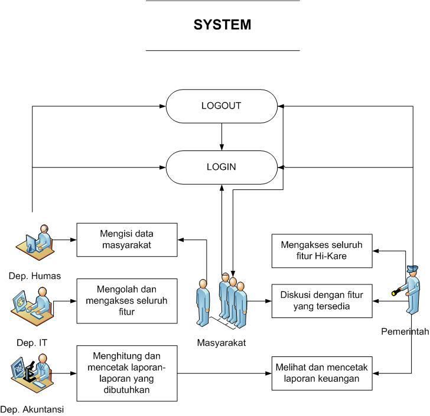
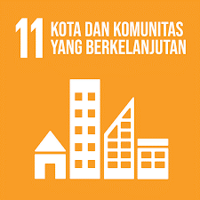

Hi-Kare merupakan aplikasi yang memanfaatkan ilmu akuntansi, khususnya sistem informasi, dalam melakukan pengelolaan pendanaan pembangunan yang ada di Desa Kare melalui pembuatan laporan keuangan yang kredibel dan perancangan anggaran untuk mencapai perencanaan pembangunan daerah yang telah ditetapkan.
Inovasi kami bermula dari keinginan untuk meningkatkan eksistensi desa-desa yang ada di Jawa Timur menjadi hidden gems di Indonesia dan menarik minat turis untuk berwisata pada desa-desa yang ada di Jawa Timur yang masih kaya akan kekayaan hutan dan alam. Kemudian, ditinjau dari sumber daya alam dan lingkungan yang dimiliki, Desa Kare memiliki potensi besar untuk terus dikembangkan menjadi destinasi wisata yang wajib dikunjungi di Indonesia.
Departemen Humas
Departemen Akuntansi
Departemen IT
Use case digunakan untuk mengetahui fungsi apa saja yang ada di dalam sebuah sistem informasi dan siapa saja yang berhak menggunakan fungsi-fungsi itu. Rancangan Use case diagram dapat dilihat pada gambar dibawah ini:
Di sisi lain, melalui nilai-nilai bisnisnya, Hi-Kare juga hadir untuk mendukung implementasi SDGs (Sustainable Developmen Goals), khususnya pada nomor 11 tentang menjadikan kota dan pemukiman penduduk yang inklusif, aman, tangguh, dan berkelanjutan
